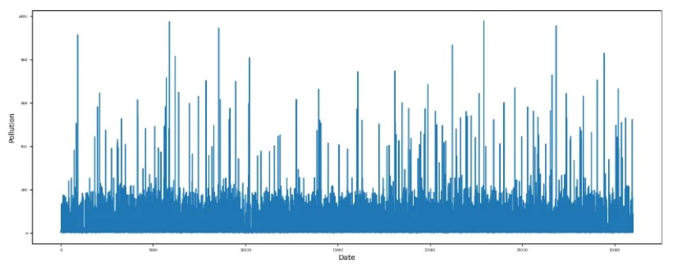
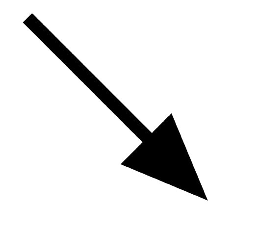

About - Microsoft Word
File
Edit
View
Insert
Format
Tools
Table
Help


B
I
U


Predicting pollution using a Time-Series Analysis model
How to predict time-sensitive data using SARIMAX.
Pollution is one of the most relevant environmental challenges of the modern age, affecting millions daily. With urbanization and industrial growth, air quality has significantly deteriorated. Accurate prediction of pollution levels is critical to assessing pollution levels in your city or country correctly. One powerful tool for forecasting pollution levels is the SARIMAX model, a time series forecasting technique capable of handling seasonal patterns that take into consideration external factors that can affect the predicted values.
In this article, we explore the SARIMAX model and how it can be effectively used to predict pollution levels.
What is a SARIMAX model?
SARIMAX stands for Seasonal AutoRegressive Integrated Moving Average with eXogenous variables. It is an extension of the ARIMA model (AutoRegressive Integrated Moving Average) that accounts for seasonality and incorporates external factors (exogenous variables) that might influence the forecast.
ARIMA model
To better understand the SARIMAX model, here is a breakdown of the basic ARIMA model. This is a powerful tool specifically used for forecasting time-dependent variables. It has three main components:
- AutoRegression (AR): this takes into account the past values to predict the current ones. In code, this is represented by the letter p. Performs linear regression on the past p values on the time series to forecast the current values.
- Moving Average (MA): takes care of past errors in predictions. In Python, this is noted with the letter q. Performs linear regression on the last q error values to predict the correct value.
- Integration (I): makes the times series stationary. This means that the moving average is consistent throughout the existing values.
** If the data is not stationary from the beginning, this can be made stationary after some differentiations. The ARIMA model is then characterized by three coefficients: its autoregression order p, and integration order d, corresponding to the number of differentiations required to make the time series stationary. If the series is stationary, d would be zero. And lastly, its moving-average order q.
SARIMAX model
Two components differentiate the SARIMAX model from the original ARIMA: seasonal patterns and exogenous variables.
A seasonal pattern occurs when a variable is affected by seasonal factors like the year or the time of the week. Seasonality is always of a fixed an known frequency.
Exogenous variables are variables whose cause is external to the model and whose role is to explain other variables or outcomes in the model.
Using SARIMAX to forecast pollution values in a Python project
** Before implementing the model make sure that the data is clean, has no duplicates, and most importantly has a clear time stamp for each row.
Explore the data
Start with some descriptive statistics to summarize the features of the data frame.
data = pd.read_csv('clean-data.csv')
statistics = data.drop(columns=['id', 'timestamp']).describe() # the 'id' and 'timestamp' columns can't represent statitstics
round(statistics, 2)
Perform a correlation analysis between the target variable and the other variables to identify significant relationships.
A positive correlation is a relationship between two variables that tend to move in the same direction. A positive correlation exists when one variable tends to decrease as the other variable decreases, or one variable tends to increase when the other increases.
A negative, or inverse correlation, between two variables indicates that one variable increases while the other decreases, and vice-versa.
correlations = {}
correlation_df = data.drop(columns=['id','timestamp', 'latitude', 'longitude'])
for column in correlation_df.columns:
if column != 'pollution':
corr, _ = pearsonr(correlation_df['pollution'], correlation_df[column])
correlations[column] = corr
sns.heatmap(correlation_df.corr(), annot=True, cmap='coolwarm')
plt.title('Correlation Matrix')
plt.show()
Based on these results, the most influential variables for predicting pollution are the pressure and wind speed.
Check the evolution of the target and the exogenous variables over time to check for seasonality.
data["pollution"].plot(figsize=(16, 6), fontsize=5)
plt.xlabel("Date")
plt.ylabel("Pollution")
data["traffic_level"].plot(figsize=(16, 6), fontsize=5)
plt.xlabel("Date")
plt.ylabel("Traffic Level")
data["wind_speed"].plot(figsize=(16, 6), fontsize=5)
plt.xlabel("Date")
plt.ylabel("Wind Speed")

Plot the seasonal decomposition of the target variable.
results = seasonal_decompose(data['pollution'], period=720) # One month period
results.plot()
- The trend component helps us see the evolution of data over time: if it’s increasing, decreasing, or consistent over the days.
- The seasonal component helps pick up any patterns in the data.
- The residual component represents any unusual or unexpected values within the data.
Now, you can move on to the forecasting part of the project.
Import the data and set the timestamp as the index.
data = pd.read_csv('clean-data.csv')
data.set_index('timestamp', inplace=True)
data.sort_index(inplace=True)
Make sure that you have enough data for your predictions. For example you want to predict the next 48 hours, you need at least 48 entries in the data frame.
print(f"Number of rows in DataFrame: {len(df)}")
Check for stationarity. Stationarity is an important characteristic of time series data. A stationary time series is one whose statistical properties like mean, variance, autocorrelation, etc., are all constant over time. This means that the mean and variance of the series should not be a function of time. If the series is stationary, it is easier to model its behavior.
def adfuller_test(pollution):
result = adfuller(pollution)
if result[1] <= 0.05:
print('strong evidence against the null hypothesis(Ho), reject the null hypothesis, data is stationary')
else:
print('weak evidence against the null hypothesis(Ho), data is not stationary')
adfuller_test(data['pollution'])
Calculate the p, d, and q values.
- p: the number of lag observations in the model, also known as the lag order. It represents the number of days you want to look back to predict the data for the next day.
- d: the number of times the raw observations are differenced; also known as the degree of differencing. It is used to see a clearer pattern in your data. You might look at the changes from one day to the next instead of the actual values.
- q: the size of the moving average window, also known as the order of the moving average. It is like taking an average of past errors (differences between actual and predicted values) to smooth out your predictions. If q is 2, you’re using the average of the errors from the last two days to help make today’s prediction more accurate.
stepwise_fit = auto_arima(data['pollution'], trace=True)
Train and predict the model.
######### Split the data into training and validation sets #########
split_index = int(0.70 * len(df))
train_exog = df[['traffic_level', 'pressure']][:split_index]
train_endog = df['pollution'][:split_index]
exog = df[['traffic_level', 'pressure']]
######### Train the model for each dataframe #########
model = sm.tsa.statespace.SARIMAX(df['pollution'], order=(0, 1, 1), seasonal_order=(0, 1, 1, 48))
results = model.fit()
######## Forecasting #########
forecast_exog = exog[-48:] # Use the last 48 hours of exogenous variables
forecast = results.forecast(steps=12, exog=forecast_exog)
In conclusion, you should choose the SARIMAX model if:
- The data is a times series.
- The dataset contains external factors that can influence the target variable.
- You need a flexible model that can handle complex data relationships, including non-stationary data, which is common in real-world time series like pollution data.
Draw ▾


AutoShapes ▾



Page 1
Sec 1
1/1
At 1"
Ln 1
Col 1
REC
TRK
EXT